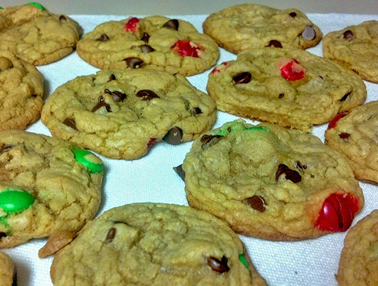
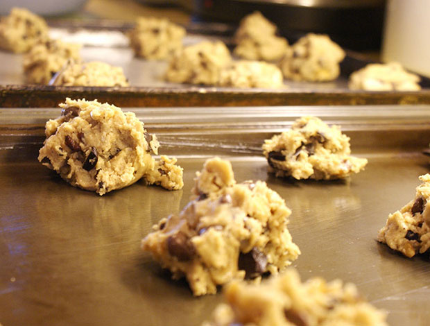
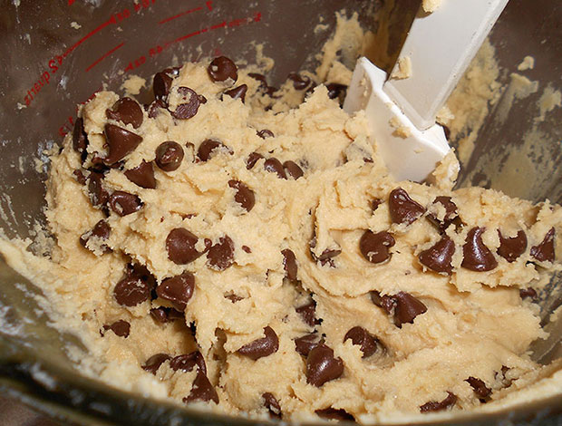

Ultimate Chocolate Chip Cookies
The best cookies you will ever jam into your gob! Slightly crispy on the outside, gooey in the middle, and still soft and chewy for days (not that they will last that long).
or Share This Recipe:

- 
- 
- 
Yield:
around 48 4-inch cookies
Prep Time:
20 minutes
Cook Time:
8-10 minutes
Ingredients
- 2 3/4 cups all-purpose flour
- 1 teaspoon baking soda
- 1 teaspoon baking powder
- 1 teaspoon fine sea salt
- 1 cup unsalted butter, at room temperature
- 1/2 cup granulated sugar
- 1 1/4 cups packed brown sugar
- 2 teaspoons vanilla extract
- 2 large eggs plus 1 egg yolk, at room temperature
- 2 cups semi-sweet chocolate chips
Instructions
Preheat oven to 350ºF. Line baking sheets with nonstick baking mats or parchment paper (or lightly grease them with shortening).
In a medium bowl combine the flour, baking soda, baking powder, and salt.
In a separate bowl and using an electric mixer beat the butter, granulated sugar, and brown sugar until creamy, about 2 minutes. Add the eggs, one at a time, beating well after each addition. Add the vanilla. Gradually beat in the flour mixture. Stir in the chocolate chips.
Divide the dough into 1 to 1 1/2 tablespoon sized balls and drop onto prepared baking sheets with a couple inches between them.
Bake for 8-10 minutes, or until golden brown. Cool for 2 minutes before removing to wire racks or paper towels to cool completely.
Alternatives: Try wrapping dough in plastic wrap and refrigerating for 24 hours, but no more than 72 hours, after mixing. Then let dough sit at room temperature just until soft enough to scoop.
Also, try replacing half the chocolate chips with candy-coated chocolate pieces, white chocolate pieces, or peanut butter pieces.
Tip: If you keep the butter in the refrigerator or freezer and don't want to wait for it to come to room temperature, use a cheese grater to shred the sticks into your mixing bowl before you start. Prepare the dry ingredients in another bowl while you wait and after 5-10 minutes the butter should be soft enough to work with.
Comments